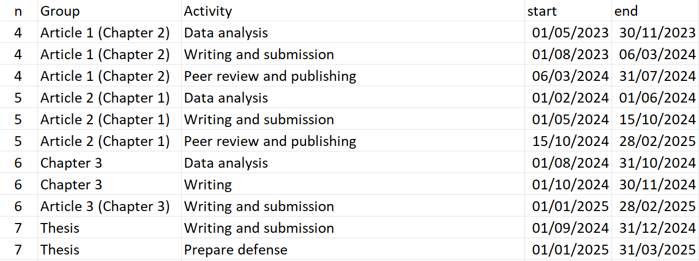
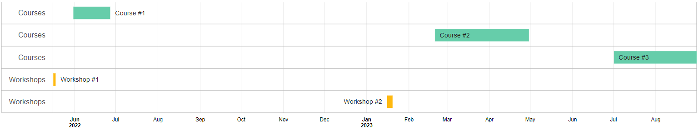
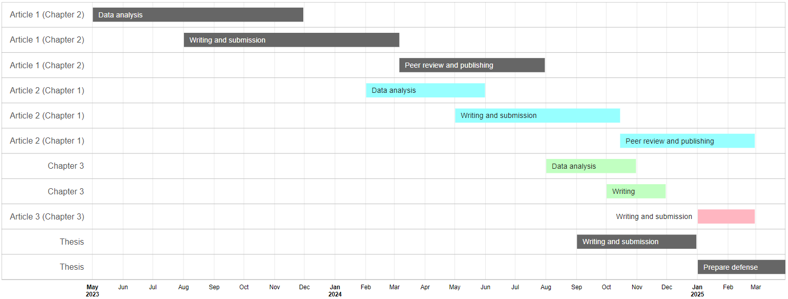

# Loading the packages
require(googleVis)
require(readxl)
require(dplyr)
# Read table with information of your activities
inputFile <- "input_table.xlsx"
# Define the colors for each group (# of colors = # of groups) in HEX code
cols <- c("mediumaquamarine", "darkgoldenrod1", "gray40",
"darkslategray1", "darkseagreen1", "lightpink", "lightpink", "mediumpurple2") |>
gplots::col2hex() |>
gsub(pattern = "#", replacement = "") |>
tolower()
# Size of diagram
widthOut <- 1800
heightOut <- 900
# Sizes of text
sizeTextGroups <- 18
sizeTextActivities <- 16
# Some text for seting the ID of the figure
idHTML <- "PhDTimeline_WLauM"
# Extracting the name of sheets of your Excel file
allSheets <- excel_sheets(path = inputFile)
# Run a loop along the sheets
for(i in seq_along(allSheets)){
# Read the sheet
inputData <- read_excel(path = inputFile, sheet = allSheets[i])
# Get the groups
nGroups <- unique(inputData$n)
# Create a string that will be used for the gvisTimeline as colors for groups
tempCols <- cols[nGroups] |>
sprintf(fmt = "'%s'") |>
paste(collapse = ",") |>
sprintf(fmt = "[%s]")
# Take the read table...
inputData |>
rename_with(.fn = \(x) tolower(x) |> gsub(pattern = "[[:blank:]]", replacement = "")) |>
rename(Group = group, Activity = activity) |>
# ...add little chanegs: making some changes to the group labels,
# converting dates to format Date
mutate(group = paste0(Group, ": "),
start = as.Date(x = start),
end = as.Date(x = end)) |>
# Run the main function
gvisTimeline(rowlabel = "Group",
barlabel = "Activity",
start = "start",
end = "end",
options = list(timeline = sprintf("{%s}",
paste("groupByRowLabel:false",
"colorByRowLabel:true",
sprintf("rowLabelStyle:{fontSize: %s}",
sizeTextGroups),
sprintf("barLabelStyle:{fontSize: %s}",
sizeTextActivities),
sep = ",")),
alternatingRowStyle = FALSE,
backgroundColor = 'white',
height = heightOut,
width = widthOut,
colors = tempCols),
chartid = paste(idHTML, i, sep = "_")) |>
# Plot (show) the time line
plot()
}Image credits: Jussara Romão at Unplash
[EN] Drawing timeline diagrams in R
A Gantt (timeline) diagram is a visual project management tool that organizes tasks on a timeline, showing their duration, start and end using horizontal bars. It is especially useful in writing research projects because it allows you to clearly plan and visualize key stages, such as literature review, data collection, analysis and writing, ensuring that deadlines are met. In addition, it helps to coordinate efforts among team members, identify possible overlaps or bottlenecks, and provide a reference for monitoring project progress.
While they are easy to understand, they are not necessarily easy to draw, especially if you want to maintain the proportions between periods and the length of each line:
We will start by building a table in MS Excel with the following columns:
n,group,activity,startandend. Thencolumn will be used to define the difference (or similarity) of colors between each element (line):
The script will generate a graph for each sheet in the file.
Now we will move on to the script, where the first thing we will do is to make sure we have installed the googleVis, readxl and dplyr packages:
GoogleVis generates files in HTML format that will open immediately in our default browser (each sheet of our input file will generate an HTML that will open in a separate tab). From there we can take screenshots (or snippets) to save them as image files or paste them directly into the document we are working on.
For our example, two tabs were generated with the expected diagrams:


[ES] Dibujando diagramas de línea de tiempo en R
Un diagrama (de líneas de tiempo) de Gantt es una herramienta visual de gestión de proyectos que organiza las tareas en una línea de tiempo, mostrando su duración, inicio y fin mediante barras horizontales. Es especialmente útil en la redacción de proyectos de investigación porque permite planificar y visualizar de manera clara las etapas clave, como la revisión de literatura, recolección de datos, análisis y redacción, asegurando que se cumplan los plazos establecidos. Además, ayuda a coordinar esfuerzos entre los integrantes del equipo, identificar posibles solapamientos o cuellos de botella y proporcionar una referencia para monitorear el progreso del proyecto.
Si bien son fáciles de entender, no necesariamente lo son de dibujar, sobre todo si se desea mantener las proporciones entre los períodos y el largo de cada línea:
Comenzaremos construyendo una tabla en MS Excel con las siguientes columnas:
n,group,activity,startyend. La columnanservirá para definir la diferencia (o similaridad) de colores entre cada elemento (línea):El script generará un gráfico por cada hoja del archivo.
Ahora pasaremos al script, en donde lo primero que haremos será asegurarnos de tener instalados los paquetes googleVis, readxl y dplyr:
# Loading the packages
require(googleVis)
require(readxl)
require(dplyr)
# Read table with information of your activities
inputFile <- "input_table.xlsx"
# Define the colors for each group (# of colors = # of groups) in HEX code
cols <- c("mediumaquamarine", "darkgoldenrod1", "gray40",
"darkslategray1", "darkseagreen1", "lightpink", "lightpink", "mediumpurple2") |>
gplots::col2hex() |>
gsub(pattern = "#", replacement = "") |>
tolower()
# Size of diagram
widthOut <- 1800
heightOut <- 900
# Sizes of text
sizeTextGroups <- 18
sizeTextActivities <- 16
# Some text for seting the ID of the figure
idHTML <- "PhDTimeline_WLauM"
# Extracting the name of sheets of your Excel file
allSheets <- excel_sheets(path = inputFile)
# Run a loop along the sheets
for(i in seq_along(allSheets)){
# Read the sheet
inputData <- read_excel(path = inputFile, sheet = allSheets[i])
# Get the groups
nGroups <- unique(inputData$n)
# Create a string that will be used for the gvisTimeline as colors for groups
tempCols <- cols[nGroups] |>
sprintf(fmt = "'%s'") |>
paste(collapse = ",") |>
sprintf(fmt = "[%s]")
# Take the read table...
inputData |>
rename_with(.fn = \(x) tolower(x) |> gsub(pattern = "[[:blank:]]", replacement = "")) |>
rename(Group = group, Activity = activity) |>
# ...add little chanegs: making some changes to the group labels,
# converting dates to format Date
mutate(group = paste0(Group, ": "),
start = as.Date(x = start),
end = as.Date(x = end)) |>
# Run the main function
gvisTimeline(rowlabel = "Group",
barlabel = "Activity",
start = "start",
end = "end",
options = list(timeline = sprintf("{%s}",
paste("groupByRowLabel:false",
"colorByRowLabel:true",
sprintf("rowLabelStyle:{fontSize: %s}",
sizeTextGroups),
sprintf("barLabelStyle:{fontSize: %s}",
sizeTextActivities),
sep = ",")),
alternatingRowStyle = FALSE,
backgroundColor = 'white',
height = heightOut,
width = widthOut,
colors = tempCols),
chartid = paste(idHTML, i, sep = "_")) |>
# Plot (show) the time line
plot()
}googleVis genera archivos en formato HTML que se abrirán inmediatamente en nuestro navegador predeterminado (cada hoja de nuestro archivo de entrada generará un HTML que se abrirá en una pestaña independiente). A partir de ahí podremos realizar capturas (o recortes) de pantalla para guardarlos como archivos de imagen o pegarlos directamente sobre el documento en el que estemos trabajando.
Para nuestro ejemplo, se generaron dos pestañas con los diagramas esperados: